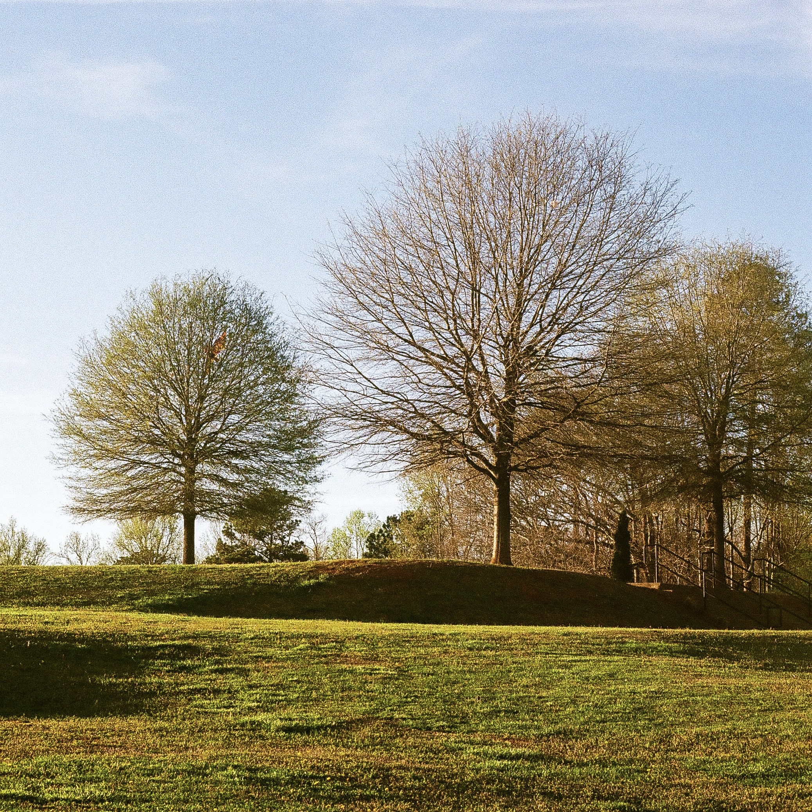
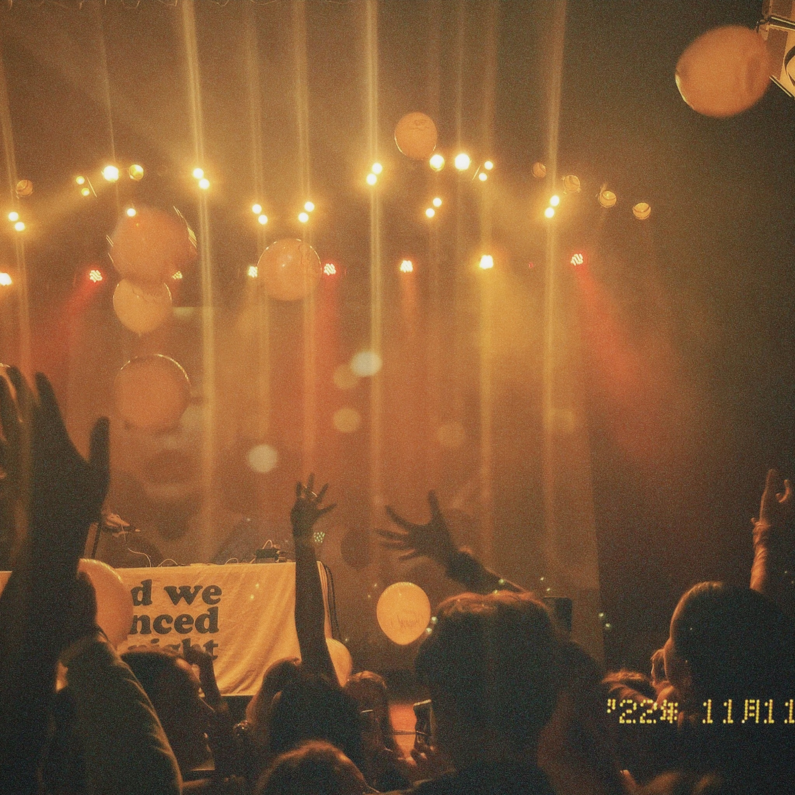
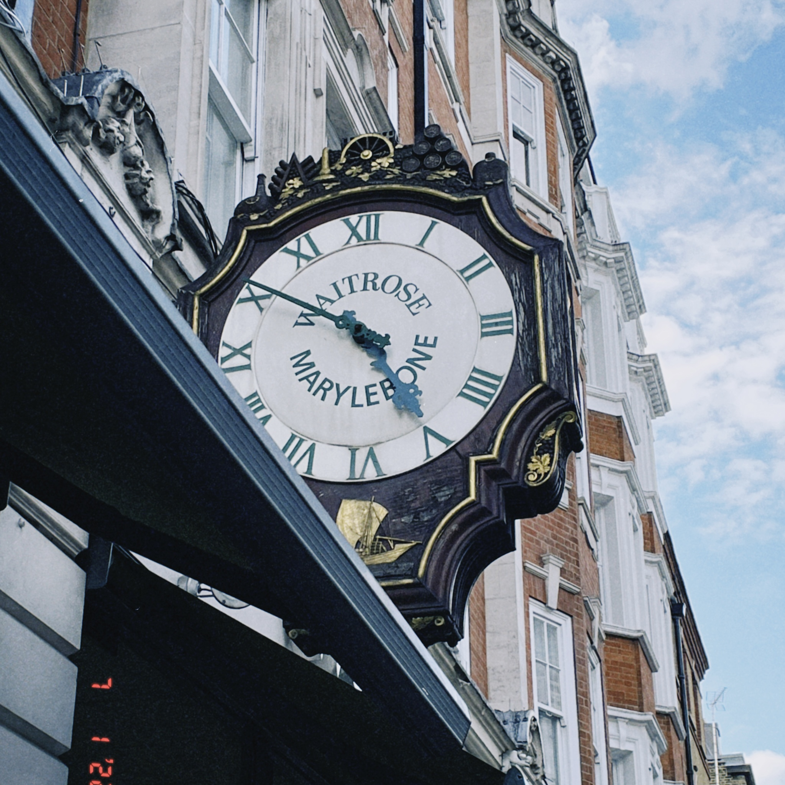
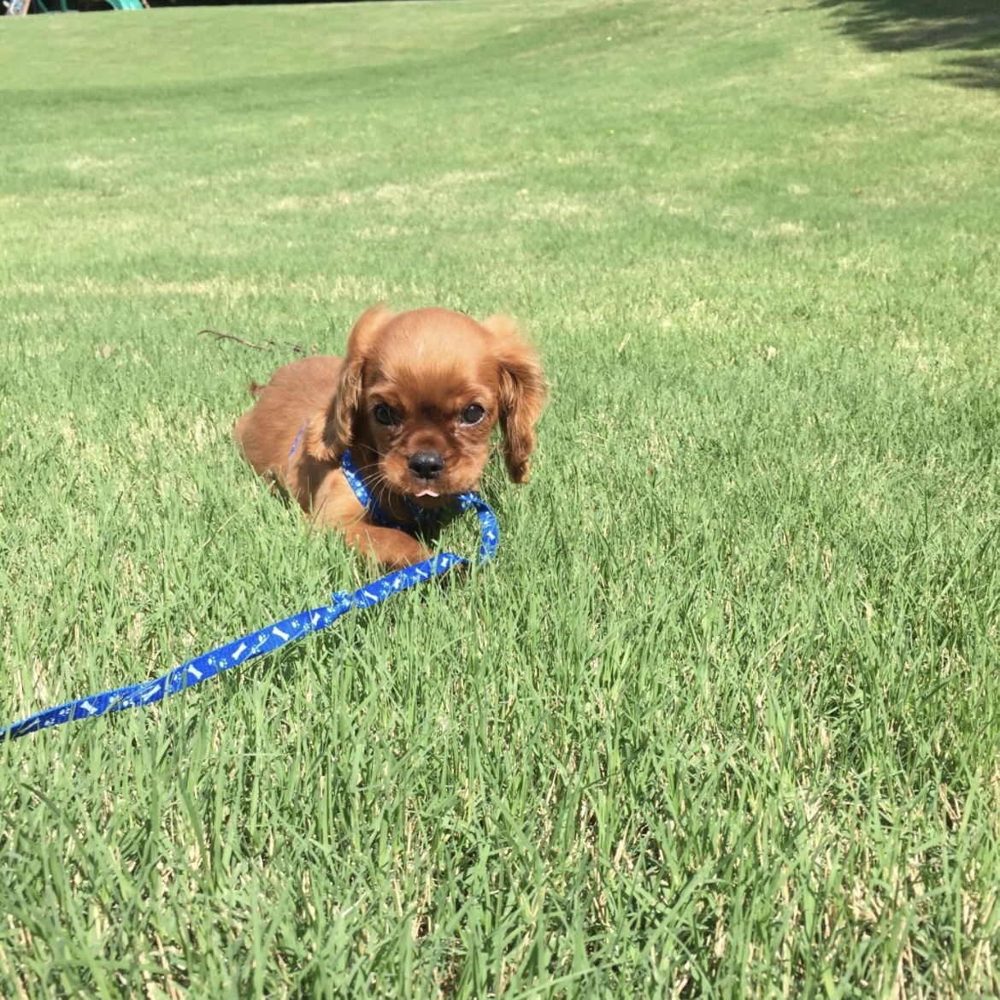
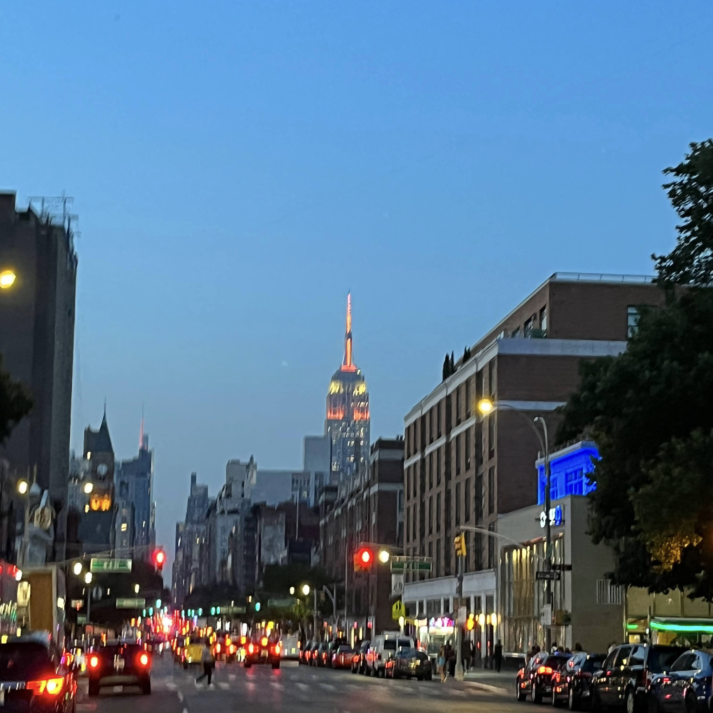

Welcome to my corner of the web! I'm a passionate second-year Computer Science student at Georgia Tech, specializing in Artificial Intelligence and People. My academic path is shaped by a profound belief that technology, when thoughtfully applied, can profoundly enhance the human condition. Throughout my journey at Georgia Tech, I've delved deep into the mechanics of how software and systems influence our lives. From taking classes such as Object-Oriented Programming, Web Development, Data Structures and Algorithms, and Software Engineering, my education has been both broad and deep. These courses have not only honed my technical skills but also sharpened my problem-solving abilities, enabling me to approach challenges with a balanced blend of analytical rigor and creative thinking. Looking ahead, I am eager to explore how emerging technologies like AI and machine learning can be ethically integrated into human-centric design practices. I envision a future where technology not only solves complex problems but does so in a way that is intuitive, inclusive, and deeply respectful of the human experience.
My passion for software development is driven by a desire to create technology that enhances people's lives through intuitive and efficient interactions. Through projects such as a College Scheduler App, Heros for Children website development, and and escape room simulation game, I have learned how to emphasizing user-centered design, empathy-driven solutions, and the importance of agile development methodologies. What excites me most about software development is that problem-solving, design, writing, research, and data analysis are all part of the field. It offers endless learning opportunities and the flexibility to explore new challenges, keeping my curiosity and engagement alive.